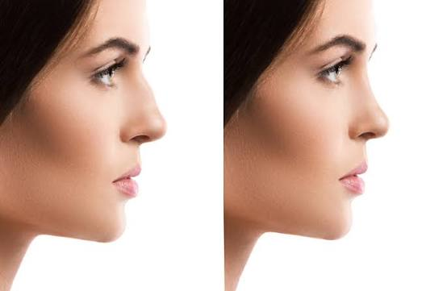
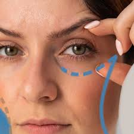
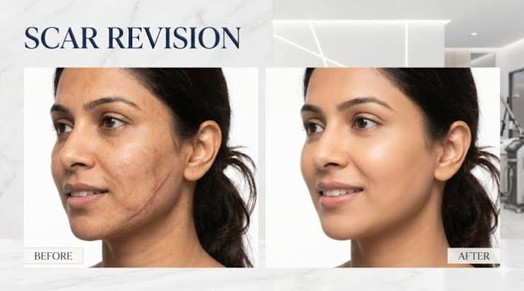
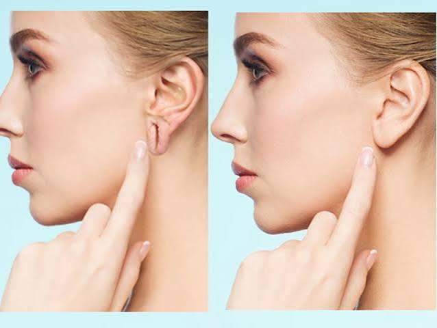
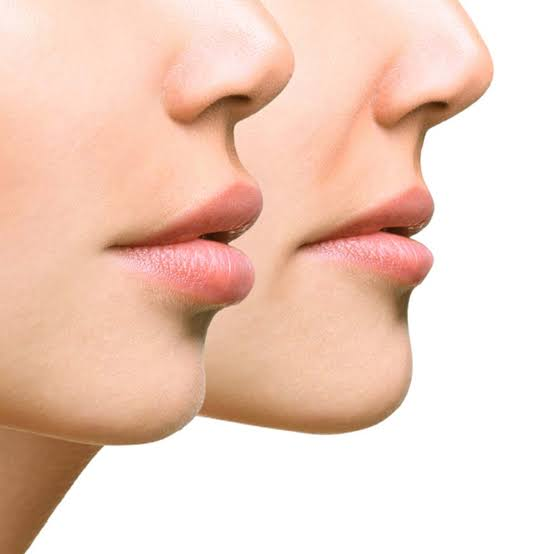
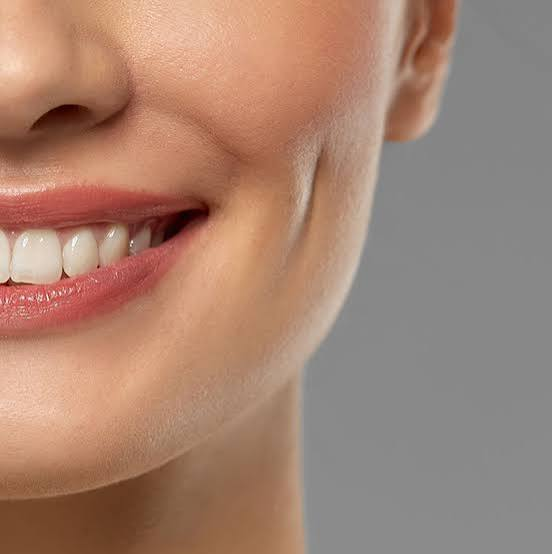
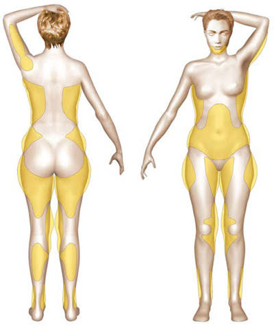
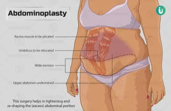

Every procedure is personally performed by Dr. Amit Porwal — combining surgical precision with an aesthetic eye, so results always look natural, balanced and unmistakably you.
Book a private consultation →
"20 years of precision. One passion — you."
Dr. Amit Porwal has spent over two decades mastering the balance between surgical precision and natural aesthetics. From facial reshaping to full-body contouring, every procedure is personally performed by him — never delegated — so patients receive the same exacting standard of care and artistry in every single case.
No confusing medical jargon — just what each procedure does, and who it's for.

Reshapes and refines the nose to restore facial balance and harmony. Suitable for correcting size, shape, or breathing-related concerns, with results tailored to each patient's natural facial structure.

Removes excess skin and puffiness around the eyes for a refreshed, more youthful and alert appearance, while preserving natural eye shape and expression.

Minimises the visibility of scars from injury, acne or previous surgery using advanced surgical techniques, improving skin texture and confidence.

Restores stretched, torn or split earlobes — often caused by heavy earrings or injury — with a quick, minimally invasive procedure and natural-looking results.

Reduces excess lip volume to create better facial proportion, for patients seeking a more balanced, natural lip shape.

A precise, minor procedure that creates natural-looking dimples, customised to each patient's smile and facial structure.

Removes stubborn, diet-resistant fat deposits to sculpt and contour the body, giving smoother, more defined body lines.
Enhances breast size and shape using implants tailored to each patient's body proportions, for natural-looking, balanced results.

Removes excess abdominal skin and tightens weakened muscles — commonly after pregnancy or major weight loss — for a firmer, flatter abdomen.
Dr. Amit Porwal is a Facial Cosmetic Surgeon with over 20 years of experience performing facial and body cosmetic surgery procedures.
Rhinoplasty is performed under anesthesia, so there is no pain during the procedure itself. Mild swelling and discomfort during recovery are normal and manageable with prescribed care.
Most patients resume light routine activity within a few days. Final, refined results become visible over the following weeks as swelling gradually subsides.
Individuals with excess abdominal skin or muscle laxity — often after pregnancy or major weight loss — who are in good general health, are typically good candidates.
Yes. Every surgical procedure listed is personally performed by Dr. Amit Porwal himself, ensuring consistent precision and care across every case.
Book a private, one-on-one consultation with Dr. Amit Porwal to discuss your goals.
Book a consultation →